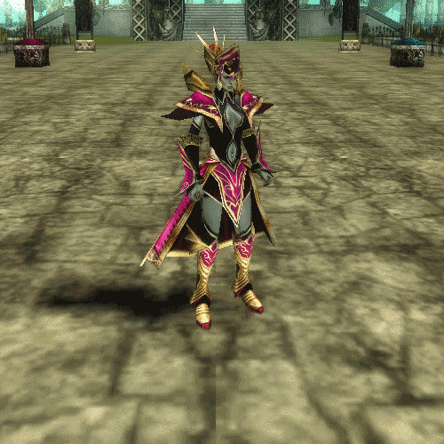

Mage
Mages are fragile spellcasters who can either serve a supportive role, or band together to unleash devastating area of effect damage upon unsuspecting foes.
Role
A mage in Knight Online is perhaps the one of the most versatile classes when it comes to their role. While some classes are better tailored to DPS or heal their party, mage remains a key utilitary component in both PvE and PvP.
This is mostly attributed to their most powerful ability: Summon Friend. A cast that allows them to teleport an ally in their party from anywhere in the map to the mage's location.
Their most popular PvP builds are suited towards party support, as a mage equipped with the most durable gear and a shield; or as a nuker, sacrificing almost all survivability to inflict tons of damage, usually coupled with other mages in the same group. On the other hand in PvE, mages excel far and away in damaging enemies with extreme amounts of defense, as those usually don't possess a lot of elemental resistance, if at all.
Attributes
Mages can specialize in 3 different elements, each with their own perks and benefits.
Lightning (blitz) mages get access to several projectile spells, blinds, stuns and medium damage.
Glacier (ice) mages get access to an equal amount of instant and projectile spells, movement speed slows and medium damage.
Fire mages do the highest damage of all 3 elements, and get access to superior nukes and damage over time abilities at the cost of utility.
All 3 elements share the same type of spells, with the only different part being the element. As is the case for their Blast, Armor, Resistance, Novas, and Blade skills, among others. Their true uniqueness mostly shines in their level 80 spells, each being notoriously different depending on the element. Fire offers a damage over time projectile, while Ice disables an enemy for a little over 10 seconds, rendering them invulnerable and finally Lightning gives you a small distance blink or teleport, which can be cast in any direction you want to gain or close some distance between you and your foes.
Every mage ability does more damage the higher is the level of the skill and all of them ignore enemy armor. It is their elemental resistance what plays its role instead.
A mage does not usually spec for wearing shields because it's not one of their main attributes, and having the lowest defense rates in the game together with no real way to escape pressure like Rogues do, makes them the most vulnerable class in Knight Online. They need to be supported as much, if not more than a Warrior in order to strive in PvP.
In PvE, their damage against bosses is unrivaled, and a few mages can easily overcome a melee party in a long fight against a durable boss.
Their main stat attribute is Magic Power, and their secondary is Intelligence.
Strategy
In PvP, as a support mage, your primary goal is to keep your party tightly knit and to create opportunities through your AoE crowd control abilities, while teleporting allies away from danger as much as you can. Positioning is key for your survival.
Only one support mage per party is recommended.
As an offensive mage, your mission is to try to land the perfect AoE bomb on distracted foes. To do this they need to be as sneaky as possible, or if geared enough you can just go to town on your opponents. One or two death become a secondary concern when all you need is a clean opening to rain death upon dozens of enemies!
Offensive mage parties in the other hand need as many mages as they can use. 7 mages and a priest is optimal, but 6 mages can work too.